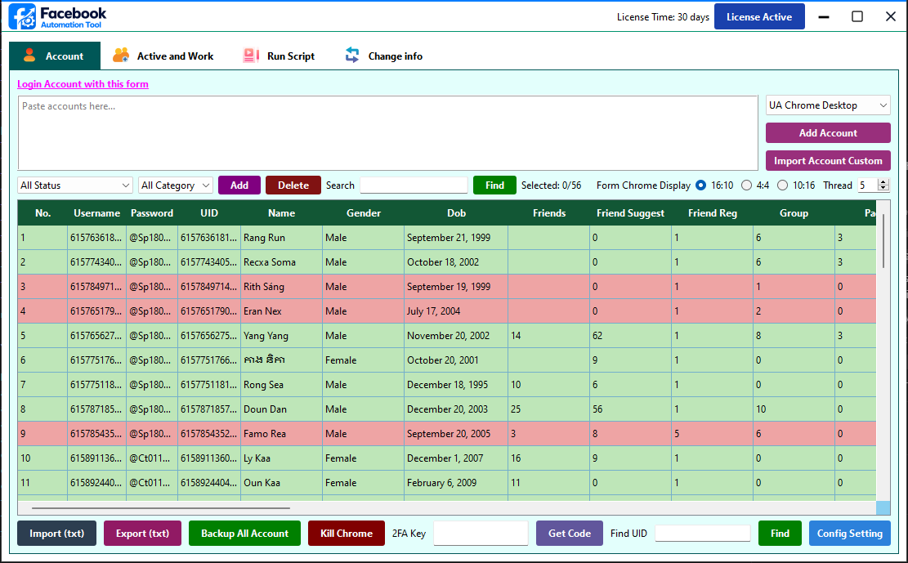

An enterprise-grade optimization dashboard engineered for professional anti-detect multilogin execution, multi-threaded operations, and account matrix workflow automation.
Download App Installer (.ZIP)Size: ~1.8 GB Bundle • Bundle includes Brave, GoLogin API, Chrome Portable, and Chromium packages.

FAT is a robust, all-in-one execution engine custom-tailored for advanced profile identity orchestration. By completely isolating cookie structures, system variables, and localized proxy parameters, FAT ensures secure account task management across independent profiles simultaneously.
Equipped with built-in sandbox distributions of portable Chrome environments, Brave instances, and deep GoLogin core capabilities, FAT manages your automation routines with zero risk of footprint crossover.
Unlike basic web extensions, FAT runs inside an isolated desktop framework that interacts directly with localized portable configurations.
Our smart launcher decouples programmatic updates from asset weights. Get performance expansions instantly with lightweight, code-only background update cycles.
Watch this comprehensive configuration walkthrough to learn how to properly import profile parameters, toggle driver setups, and deploy automation routines.
Leverages native modifications across Brave, Chromium, and Chrome Portable to protect your identity parameters across custom automation operations.
Integrated cryptographic token fields calculate verification codes seamlessly inside the client UI, maintaining constant session connectivity.
Keep browser binaries independent from the launcher code. When you update, you only download small code adjustments via the one-click process.